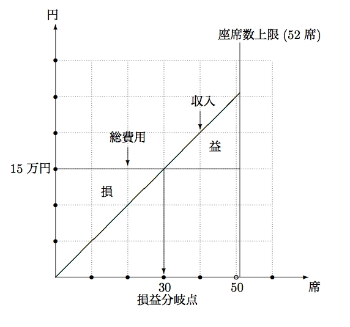

経済学で出る数学
ワークブックでじっくり攻める：問1.17
【問 1.17】
- 座席が $50$ 席売れた場合
- $収入=5,000 \times 50 = 250,000$ 円
- $総費用=150,000$ 円
- $利潤=250,000-150,000=100,000$円
- 座席が $x$ 席売れた場合
- $収入=5,000 \times x = 5,000 x$ 円
- $総費用=150,000$ 円
- $利潤=5,000 x-150,000$ 円
- 損益分岐点
- $利潤=5,000 x-150,000=0$，すなわち，$5,000 x=150,000$ を解いて，$x=30$ 席
- 損益分岐点比率
- $\dfrac{30}{52}\approx 0.58$，すなわち，$58\%$
- $\dfrac{平均費用}{価格}$
- $2,900 \div 5,000 = 0.58$となり，損益分岐点比率に一致する．

【問 1.17終わり】
【メモ】
- $平均費用=\dfrac{総費用}{総座席数}=\dfrac{150,000}{52}\approx 2900$
- 損益分岐点では，$総費用=収入$ で $収入=価格 \times 損益分岐点数$ なので
$価格=\dfrac{総費用}{損益分岐点数}$
であることがわかる．したがって，
\[
\dfrac{2900}{5000}=\dfrac{平均費用}{価格}=\dfrac{総費用}{総座席数} \div \dfrac{総費用}{損益分岐点数}=\dfrac{損益分岐点数}{総座席数}=
\dfrac{30}{52}
\]
がわかる．すなわち小問5は損益分岐点比率の簡易計算法を示していることになる．
【メモ終わり】
解答例一覧へ